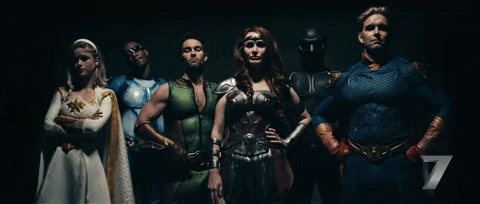

Brooklyn Nine Nine é uma série de televisão dirigida por Dan Goor e Michael Schur, produzida pela emissora americana NBC. Ela acompanha o protagonista Jake Peralta, um detetive de New York
e seus colegas da 99ª delegacia de polícia, enquanto resolvem crimes pela cidade e encaram seus próprios defeitos com uma grande dose de humor sarcástico. A premiada série ja foi vencedora do
Emmy de melhor série de comédia e seu protagonista já venceu o globo de ouro pelo papel do divertido personagem Jake Peralta.

Brooklyn Nine Nine é uma série de televisão dirigida por Dan Goor e Michael Schur, produzida pela emissora americana NBC. Ela acompanha o protagonista Jake Peralta, um detetive de New York e seus colegas da 99ª delegacia de polícia, enquanto resolvem crimes pela cidade e encaram seus próprios defeitos com uma grande dose de humor sarcástico. A premiada série ja foi vencedora do Emmy de melhor série de comédia e seu protagonista já venceu o globo de ouro pelo papel do divertido personagem Jake Peralta.
• Número de temporadas: 8 temporadas
• Emissora: NBC
• Onde Assistir: Disponível na Netflix
The Good Place, dirigida por Michael Schur, o diretor de Brooklyn 99, é uma série original Netflix que conta a história da protagonista Eleanor Shellstrop, uma atendente de telemarketing
que, após uma tragédia que leva a sua morte, finalmente pode passar a eternidade no tão sonhado paraíso. A trama da série se inicia quando Eleanor revela ter sido confundida com uma outra mulher
com seu mesmo nome, e enviada ao paraíso por engano. Junto dos antagonistas Chidi, Tahani e Jianyu, Eleanor passa a fazer o possível para merecer sua estadia no Bom Lugar em uma divertida aventura
repleta de dilemas éticos e humor sarcástico. O elenco conta com grandes nomes da sétima arte, como Kristen Bell, William Jackson Harper e Ted Danson.
The Good Place, dirigida por Michael Schur, o diretor de Brooklyn 99, é uma série original Netflix que conta a história da protagonista Eleanor Shellstrop, uma atendente de telemarketing que, após uma tragédia que leva a sua morte, finalmente pode passar a eternidade no tão sonhado paraíso. A trama da série se inicia quando Eleanor revela ter sido confundida com uma outra mulher com seu mesmo nome, e enviada ao paraíso por engano. Junto dos antagonistas Chidi, Tahani e Jianyu, Eleanor passa a fazer o possível para merecer sua estadia no Bom Lugar em uma divertida aventura repleta de dilemas éticos e humor sarcástico. O elenco conta com grandes nomes da sétima arte, como Kristen Bell, William Jackson Harper e Ted Danson.
• Número de temporadas: 4 temporadas
• Emissora: NBC
• Onde Assistir: Disponível na Netflix
The Boys se passa em um universo onde os super heróis, comuns nos filmes de aventura e ação, são apresentados a sociedade como celebridades. A série é uma perfeita sátira dos
filmes do clássico gênero de heróis, apresentando personagens com defeitos humanos e, muitas vezes, incorrigíveis. Os heróis apresentados na série produzida por Eric Kripke são uma
clara paródia de famosos personagens como o super homem e a mulher maravilha. A série, ainda, entrega ao espectador uma premissa cativante que junto do forte humor negro não permite
que a trama se torne entediante ou repetitiva.

The Boys se passa em um universo onde os super heróis, comuns nos filmes de aventura e ação, são apresentados a sociedade como celebridades. A série é uma perfeita sátira dos filmes do clássico gênero de heróis, apresentando personagens com defeitos humanos e, muitas vezes, incorrigíveis. Os heróis apresentados na série produzida por Eric Kripke são uma clara paródia de famosos personagens como o super homem e a mulher maravilha. A série, ainda, entrega ao espectador uma premissa cativante que junto do forte humor negro não permite que a trama se torne entediante ou repetitiva.
• Número de temporadas: 1 temporada
• Emissora: Original Amazon Prime
• Onde Assistir: Amazon Video